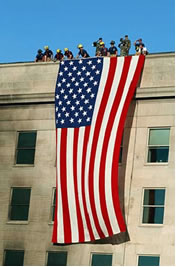
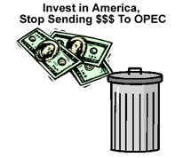

Center
for the Defense of Free Enterprise
Center
for the Defense of Free Enterprise
AGENDA 2005
Making a Difference
HOME ISSUES OPPOSITION PROJECTS DEFENDERS WISE USE BOOKSTORE ARCHIVE
|
|
|
HOME ISSUES OPPOSITION PROJECTS DEFENDERS WISE USE BOOKSTORE ARCHIVE |
Buy American:

The United States should stop sending billions of dollars overseas to people who hate us. We should spend the money right here at home.
The United States should stop shipping good jobs abroad. We need them right here in the USA.
The United States should open ANWR to safe energy production!
ANWRs 10.3 billion barrels of oil (mean estimate) equals over $300 billion worth of investment here at home. It also means over $120 billion in federal revenue that could be used for Medicare, Social Security, or prescription drugs.
ANWR would also produce 1,000,000 new jobs for Americans in all 50 states and the District of Columbia, according to a new study from the National Defense Council Foundation.
Make Big Oil spend their
money here, rather than abroad.
Make America run on American Oil!
American Jobs:
Energy Bill without
ANWR Creates Jobs
In the Middle East!
Opening ANWRs 2000 acres to safe energy exploration would create jobs in all 50 states. New research by The National Defense Council Foundation estimates that over 1 million new jobs would be created.
Providing for Americas energy needs requires a balanced, comprehensive bill which includes exploration in ANWR. Without it, were sending American jobs and hard-earned dollars overseas.
In September of 2003, Exxon-Mobil announced a $12 billion investment in Qatar to supply 2.2 billion cubic feet per day of LNG to the U.S. (about 360,000 barrels of oil equivalent per day)
Shell announced a $5 billion deal with Qatar to build a petrochemical plant to convert natural gas to clean burning diesel, at about 140,000 barrels per day.
In two days, $17 billion in investments were sent overseas that could have been invested in the United States. This is equal to of the energy we would get daily from ANWR.
Want American Jobs? Open ANWR.
The Money:
The $7 Trillion Dollar Heist

From The Economist: There is a political risk of relying on the Organization of Petroleum Exporting Countries (OPEC). Oil still has a near-monopoly hold on transport. If the supply is cut off even for a few days, modern economies come to a halt (* The Economist, October 25, 2003.)
Since the Arab Oil Embargo, crude oil prices have risen from $3 dollars a barrel in 1972 to $42 dollars a barrel today.
U.S. oil imports hit a record level of 66% in September 2003.
Saudi Arabia s share of the world oil market will actually grow over the next two decades simply because it has huge reserves of oil. Two-thirds of the worlds proven oil reserves can be found in Saudi Arabia and four of its neighbors.*
Over the last three decades,
OPEC has transferred an astounding
$7 TRILLION Dollars from American consumers to OPEC producers, simply by keeping
the oil price above its true market-clearing level.*
$ 7 Trillion Dollars was approximately 67% of the U.S. Gross Domestic Product in 2002.
According to the U.S. Energy Information Administration (EIA), the mean estimate of economically recoverable oil in ANWR is 10.3 billion barrels.
That would replace more than 30 years worth of Saudi Arabian imports.
ANWR exploration would save money, invest in the American economy and create more than 1 million new jobs in the United States.
Click here to go to
the next ANWR topic,
The Technology
The Center posts this
government essay in the interest of public education.
The Center was not solicited to post this essay, nor paid by any party to post it.
RETURN TO CENTER FOR THE DEFENSE OF FREE ENTERPRISE HOME PAGE